Contributor
김승욱님, dane님
References
wikipedia: Stratified Sampling
When should you choose Stratified sampling over random sampling?
핸즈온 머신러닝 (2판)
핸즈온 머신러닝 (2판): 2장 - 머신러닝 프로젝트 처음부터 끝까지 notebook
1. Introduction to Stratified Sampling
- 데이터 분석을 위해 일부의 데이터를 가져오는 것을 추출(sampling)이라 합니다.
- 인위적인 편향을 방지하기 위해 아무렇게나 가져오는 임의추출(random sampling)을 사용합니다.
- 그러나 임의추출은 데이터의 비율을 반영하지 못한다는 단점이 있어, 층화추출(stratified sampling)이 권장됩니다.
- 적절한 층화추출은 임의추출보다 항상 좋다는 것이 증명되어 있다고 합니다.
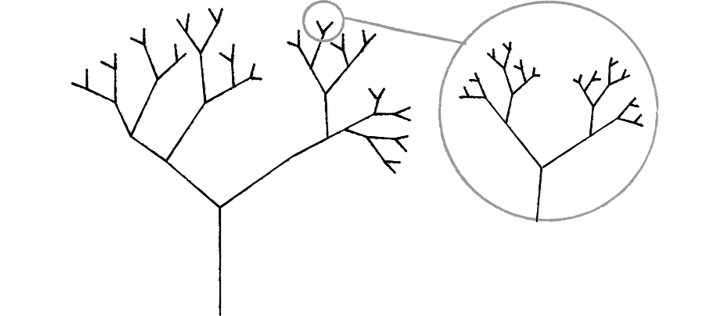
1.1. 층화추출 적용 과정
- 층화추출을 적용하려면 여러 기법을 함께 사용해야 합니다.
(1). 층화추출은 범주형(categorical) 데이터에 적용하는 기법입니다.
- 수치형(numerical) 데이터는 먼저 계층화(stratification)를 해야 합니다.
- 계층화는 이산화(discritization), 양자화(quantization)등으로도 불리는데, 연속적으로 이어진 데이터를 사전에 정의된 구간으로 분할하는 과정입니다.
(2). 범주형 데이터는 인코딩(encoding)을 해야 할 수 있습니다.
- 데이터 연산시 문자열(string)로 되어 있는 데이터는 숫자열 변환이 필요합니다.
- 훈련 세트에 없는 항목이 테스트 세트에 들어올 경우 오류를 내고 중지를 하거나 (오류를 감안하고) 무시하고 진행해야 하는데, 그럴려면 훈련 세트의 인코딩 정보를 기억하고 테스트 세트에 적용할 장치가 필요합니다.
- 기계적으로
pandas.get_dummies()를 훈련 세트, 테스트 세트에 따로 적용하면 안 된다는 말씀입니다.
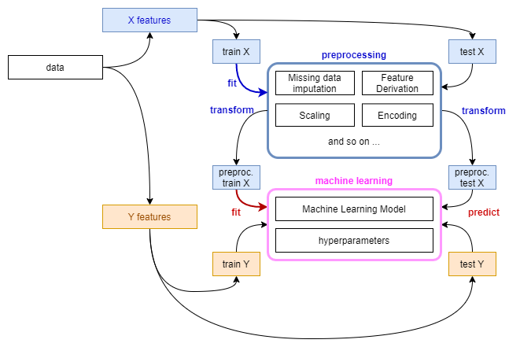
- 훈련 데이터 기준으로 전처리기(preprocessor)를 세팅하고 머신러닝 모델을 학습해야 합니다.
1.2. 층화추출 지원 함수
scikit-learn은 지정된 변수에 대한 층화추출을 여러 방식으로 지원합니다.StratifiedShuffleSplit(): 층화추출 후 index를 반환합니다.StratifiedKFold(): K Fold를 만든 후 index를 반환합니다.train_test_split(): 비율대로 분할한 데이터셋을 반환합니다.
- 핸즈온 머신러닝의 캘리포니아 주택 가격 예제를 통해 Stratified Sampling 과 Random Sampling을 비교해보겠습니다.
- 핸즈온 머신러닝에서는
StratifiedShuffleSplit()을 사용했습니다. - 그러나 사용해보면 아시겠지만
train_test_split()이 더 편합니다. - 왜 굳이
StratifiedShuffleSplit을 쓴걸까 궁금했는데 이런 히스토리가 있었네요.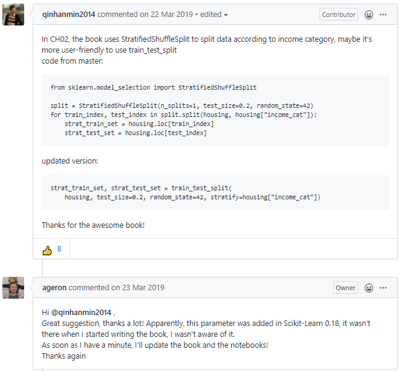
- 핸즈온 머신러닝에서는
2. Data Load and Sampling
- 글이 지나치게 길어지는 것을 막고자 데이터 로드 부분은 생갹하겠습니다.
- 전체 코드는 여기에서 받아보실 수 있습니다.
- 핸즈온 책의 역자, 박해선님이 올려주신 colab 코드를 보셔도 좋습니다.
2.1. Data Load
- 원본 데이터에서 이상치에 해당하는 부분을 제거한 뒤의 비율은 다음과 같습니다.
1
2
3
4
5
6
7
8
9
10
11
12housing_r = housing.copy()
housing_r = housing_r[housing_r["housing_median_age"] < housing_r["housing_median_age"].max()]
housing_r = housing_r[housing_r["median_house_value"] < housing_r["median_house_value"].max()]
fig, axes = plt.subplots(ncols=5, nrows=2, figsize=(15,6))
ax = axes.ravel()
for i, axi in enumerate(ax):
axi.hist(housing_r[housing_r.columns[i]], bins=50)
axi.set_title(housing_r.columns[i])
fig.tight_layout()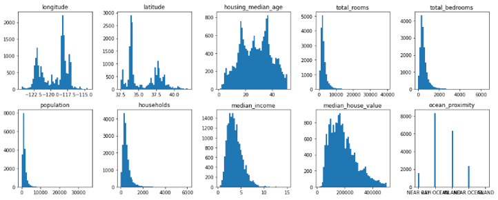
1 | housing_r['ocean_proximity'].value_counts() |
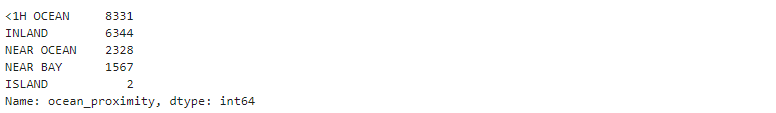
- target 변수인
median_house_value와 가장 연관성이 높은 변수는median_income입니다. - 아래
fig, ax = plt.subplots()하단 대신sns.heatmap(cor, annot=True)한방이면 더 쉽게 변수별 연관성을 볼 수 있지만 bar plot으로 표현해 보겠습니다.1
2
3
4
5
6
7
8
9
10
11
12
13
14
15
16
17
18
19
20
21
22
23
24
25
26
27columns = list(housing_r)
columns.reverse()
cor = housing_r[columns].corr()
# sns.heatmap(cor, annot=True)
fig, ax = plt.subplots()
sns.barplot(cor['median_house_value'], cor.index, ax=ax)
xlim_min = np.inf
xlim_max = -np.inf
for patch in ax.patches:
if patch.get_width() >= 0:
text_x = patch.get_width()+0.06
else:
text_x = patch.get_width()-0.08
if text_x > xlim_max:
xlim_max = text_x
if text_x < xlim_min:
xlim_min = text_x
text_y = patch.get_y()+0.5
text = f'{patch.get_width():0.2f}'
ax.text(text_x, text_y, text, ha='center')
ax.set_xlim(xlim_min-0.1, xlim_max+0.1)
plt.show()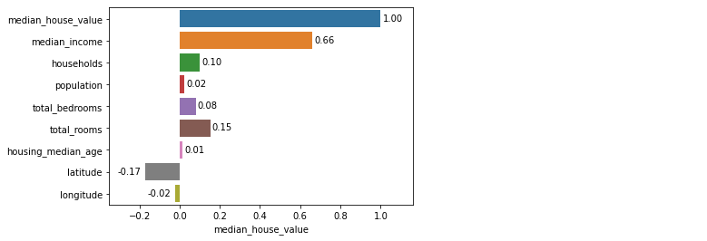
2.2. Data Sampling
- 훈련/테스트 세트를 나눌 때, 주요 변수인
median_income에 층화추출을 적용하겠습니다. - 그리고
ocean_proximity에도 함께 적용해서 층화추출 변수 추가 효과를 보겠습니다.
2.2.1. Data Quantization: ‘median_income’
- 층화추출 적용에 앞서 데이터 계층화를 수행합니다.
1
2
3
4
5
6
7
8
9bins = [0, 1, 2, 3, 4, 5, 6, 7, 8, 9, np.inf]
qlabels = [1, 2, 3, 4, 5, 6, 7, 8, 9, 10]
housing_r['income_cat'] = pd.cut(
housing_r['median_income'],
bins=qbins, labels=qlabels
)
housing_r['income_cat'].hist(bins=np.linspace(-0.5, 10.5, len(qbins)*2));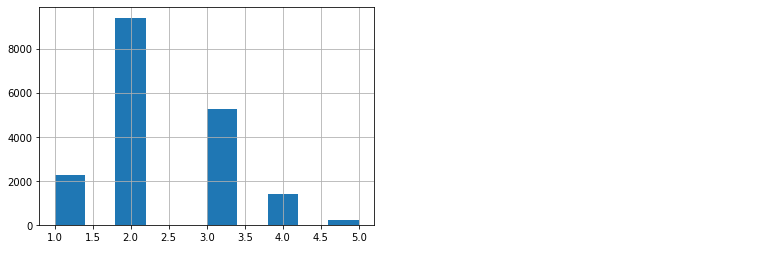
2.2.2. Data Sampling: Random and Stratified Sampling
먼저 임의추출을 수행해 봅니다.
1
2
3
4from sklearn.model_selection import train_test_split
train_random, test_random = train_test_split(housing_r, test_size=0.3,
random_state=42)이번엔 층화추출을 수행합니다.
train_test_split()에stratify=변수명을 넣어주면 됩니다.1
2
3train_strat, test_strat = train_test_split(housing_r, test_size=0.3,
random_state=42,
stratify=housing_r['income_cat'])random seed를 고정해서 반복수행에도 동일한 결과가 나오도록 하였습니다.
- 추출 결과를 비교해 보겠습니다.
1
2
3
4
5
6
7
8
9
10
11
12
13
14
15
16
17
18
19
20
21
22def income_cat_proportions(housing_r):
return housing_r["income_cat"].value_counts() / len(housing_r)
compare_props = pd.DataFrame(
{
"Random": test_random["income_cat"].value_counts(),
"Stratified": test_strat["income_cat"].value_counts(),
"Overall (%)": income_cat_proportions(housing_r) * 100,
"Random (%)": income_cat_proportions(test_random) * 100,
"Stratified (%)": income_cat_proportions(test_strat) * 100,
}
).sort_index()
compare_props["Random %err"] = (
100 * compare_props["Random (%)"] / compare_props["Overall (%)"] - 100
)
compare_props["Stratified %err"] = (
100 * compare_props["Stratified (%)"] / compare_props["Overall (%)"] - 100
)
compare_props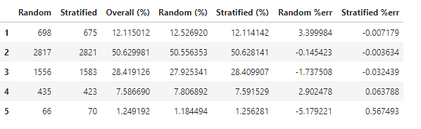
- random state가 동일함에도 불구하고 두 결과가 살짝 다릅니다.
- 층화추출이 전체 데이터의 비율을 더 잘 반영하고 있습니다.
아까 만든 income_cat 데이터는 용도를 다 했으니 지웁니다.
1
2
3
4
5train_random = train_random.drop("income_cat", axis=1)
test_random = test_random.drop("income_cat", axis=1)
train_strat = train_strat.drop("income_cat", axis=1)
test_strat = test_strat.drop("income_cat", axis=1)
housing_r = housing_r.drop("income_cat", axis=1)입력 인자(X)와 목표값(Y)을 분리합니다.
1
2
3
4
5
6
7
8
9
10
11Y_train_random = train_random['median_house_value']
X_train_random = train_random.drop('median_house_value', axis=1)
Y_train_strat = train_strat['median_house_value']
X_train_strat = train_strat.drop('median_house_value', axis=1)
Y_test_random = test_random['median_house_value']
X_test_random = test_random.drop('median_house_value', axis=1)
Y_test_strat = test_strat['median_house_value']
X_test_strat = test_strat.drop('median_house_value', axis=1)많은 코드에서 전체 데이터를 X와 Y로 먼저 분리한 후
train_test_split()을 이용해 훈련 세트와 테스트 세트를 만들지만 층화추출을 적용하려면 훈련/테스트 세트를 먼저 분할해야 합니다.- 이제 이 데이터를 이용한 머신러닝의 결과를 비교해 보겠습니다.
2.3. Preprocessing Pipeline
- 앞에서 범주형 변수를 처리하기 위해 인코딩을 한다고 말씀 드렸습니다.
- 훈련 세트에 적용된 기준을 저장했다가 테스트 세트에 적용해야 한다고도 말씀 드렸습니다.
- 이럴 때 사용하기 좋은 것이
Pipeline()입니다. - 자세한 내용은 여기에 맡기고 간단하게만 언급합니다.
- 수치형 데이터의 결측치를 median으로 메웁니다.
- 인자간 연산을 통해 파생변수를 추가합니다.
- 수치데이터에 standard scaling을 적용합니다.
- 범주형 데이터에 원핫 인코딩을 적용합니다.
handle_unknown='ignore': 테스트 세트에서 새로운 클래스를 만날 때 무시하라는 의미입니다.
기본값인 ‘error’는 오류를 내면서 중지하라는 의미입니다.drop=None: [0, 0, …, 0]으로 표기될 테스트 클래스의 새로운 클래스가 기존 클래스와 혼동되지 않도록 조치를 취합니다.1
2
3
4
5
6
7num_pipeline = Pipeline([("imputer", SimpleImputer(strategy="median")),
("attribs_adder", CombinedAttributesAdder()),
("std_scaler", StandardScaler()),])
cat_pipeline = Pipeline([("onehotencoder", OneHotEncoder(handle_unknown='ignore', drop=None))])
full_pipeline = ColumnTransformer(
[("num", num_pipeline, numcols), ("cat", cat_pipeline, catcols)]
)
fit_transform()으로 훈련 데이터를 이용한 인코더 설정fit()과 변수 변환transform()을 동시에 합니다.- 테스트 데이터는 훈련 데이터 기준으로 변환해야 하므로
fit()이 없는transform()만 해야 합니다.1
2
3
4
5
6
7pipeline_random = deepcopy(full_pipeline)
X_train_random_pre = pipeline_random.fit_transform(X_train_random)
X_test_random_pre = pipeline_random.transform(X_test_random)
pipeline_strat = deepcopy(full_pipeline)
X_train_strat_pre = pipeline_strat.fit_transform(X_train_strat)
X_test_strat_pre = pipeline_strat.transform(X_test_strat)
3. Machine Learning
- 본 글에선 머신러닝 모델링은 최소한의 노력으로 수행하겠습니다.
- 모델은 hyperparameter를 고정한
RandomForestRegressor를, 평가 방식은 root mean squared error를 사용하겠습니다.1
2from sklearn.ensemble import RandomForestRegressor
from sklearn.metrics import mean_squared_error
3.1. Overall data
- 임의추출 방식44628.384490024335
1
2
3
4
5
6rf_random = RandomForestRegressor(n_estimators=30, max_features=8, random_state=42)
rf_random.fit(X_train_random_pre, Y_train_random)
Y_pred_random = rf_random.predict(X_test_random_pre)
rmse_random = np.sqrt(mean_squared_error(Y_pred_random, Y_test_random))
print(rmse_random)
- 층화추출 방식44743.58037848807
1
2
3
4
5
6rf_strat = RandomForestRegressor(n_estimators=30, max_features=8, random_state=42)
rf_strat.fit(X_train_strat_pre, Y_train_strat)
Y_pred_strat = rf_strat.predict(X_test_strat_pre)
rmse_strat = np.sqrt(mean_squared_error(Y_pred_strat, Y_test_strat))
print(rmse_strat)
- 층화추출 방식의 에러가 조금 더 적습니다.
- 그림으로 비교해 보면 어떨까요?
코드는 생략합니다. 전체 코드를 참고해주세요.
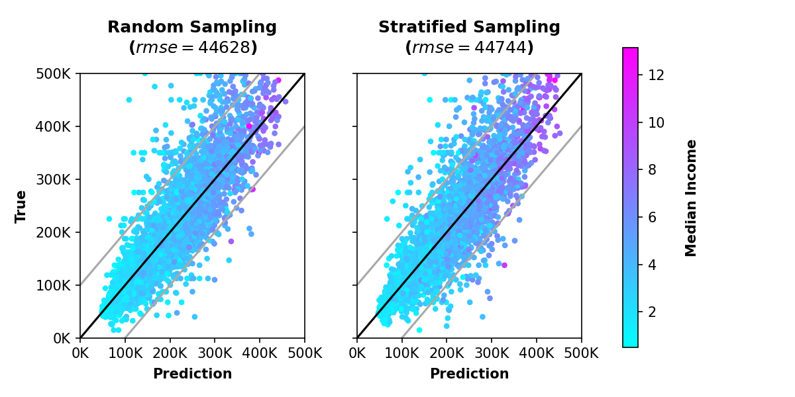
차이가 있는 듯 없는 듯 합니다.
- 앞서 소득을 10개의 구간으로 세분화했으므로, 구간별 예측력을 살펴봅시다.
3.2. data by bins
- 소득(
median_income) 구간별 예측력을 분석해 보겠습니다. 구간별 데이터를
DataFrame의 index로 접근해야 하니 리셋부터 해줍니다.1
2X_test_random.reset_index(drop=True, inplace=True)
X_test_strat.reset_index(drop=True, inplace=True)그리고 구간별로 데이터를 따로따로 모아 분리해 줍니다.
1
2
3
4
5
6
7
8
9
10
11
12
13
14
15
16
17
18
19
20
21
22
23
24
25
26
27Y_pred_random_bin = []
Y_test_random_bin = []
RMSE_random = []
Y_pred_strat_bin = []
Y_test_strat_bin = []
RMSE_strat = []
for qbin in qbins:
if qbin == qbins[-1]:
pass
else:
qbin_index = X_test_random.loc[X_test_random['median_income'] >= qbin].loc[X_test_random['median_income'] < qbin+1].index
Y_pred_random_bin.append(Y_pred_random[qbin_index])
Y_test_random_bin.append(Y_test_random.iloc[qbin_index])
if len(qbin_index) > 0:
RMSE_random.append(np.sqrt(mean_squared_error(Y_pred_random_bin[-1], Y_test_random_bin[-1])))
else:
RMSE_random.append(np.inf)
qbin_index = X_test_strat.loc[X_test_strat['median_income'] >= qbin].loc[X_test_strat['median_income'] < qbin+1].index
Y_pred_strat_bin.append(Y_pred_strat[qbin_index])
Y_test_strat_bin.append(Y_test_strat.iloc[qbin_index])
if len(qbin_index) > 0:
RMSE_strat.append(np.sqrt(mean_squared_error(Y_pred_strat_bin[-1], Y_test_strat_bin[-1])))
else:
RMSE_strat.append(np.inf)seaborn에서 bar plot을 그릴 수 있도록 데이터프레임으로 묶어줍니다.
1
2
3
4
5
6
7
8
9
10
11
12
13
14
15
16
17
18
19
20
21
22
23
24
25
26
27
28
29
30df_RMSE_random = pd.DataFrame({'RMSE': RMSE_random,
'sampling': ['random'] * len(RMSE_random),
'bin': qlabels
})
df_RMSE_strat = pd.DataFrame({'RMSE': RMSE_strat,
'sampling': ['stratified'] * len(RMSE_strat),
'bin': qlabels
})
df_RMSE = pd.concat([df_RMSE_random, df_RMSE_strat], axis=0)
df_sampling_random = pd.DataFrame({'sampling': ['random']*compare_props.shape[0],
'error(%)': compare_props["Random %err"],
'bin': qlabels
})
df_sampling_strat = pd.DataFrame({'sampling': ['stratified']*compare_props.shape[0],
'error(%)': compare_props["Stratified %err"],
'bin': qlabels
})
df_sampling = pd.concat([df_sampling_random, df_sampling_strat], axis=0)
fig, ax = plt.subplots(ncols=3, figsize=(12,4), sharex=True)
sns.barplot(x=compare_props.index, y="Overall (%)", data=compare_props, ax=ax[0], color='C3')
sns.barplot(x="bin", y="error(%)", hue="sampling", data=df_sampling, ax=ax[1])
sns.barplot(x="bin", y="RMSE", hue="sampling", data=df_RMSE, ax=ax[2])
for axi in ax:
axi.set_xlabel('bins')
fig.tight_layout()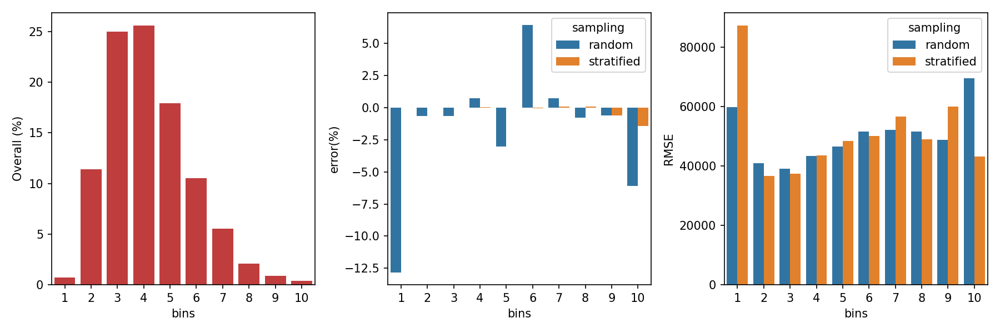
가운데 그림에서 앞서 보았던, 층화추출의 적은 추출 오차율이 한눈에 보입니다.
- 그러나 무색하게도 맨 오른쪽 그림을 보면, 첫번째와 9번째 구간에서 층화추출의 오차가 매우 큽니다. 층화추출 결과가 눈에 띄게 좋은 구간은 10번째 구간 뿐이고 나머지는 비슷비슷하네요.
4. Statistical Analysis
- 편한 임의추출 방식을 놔두고 층화추출을 했는데 에러가 커지니 속이 상합니다.
- 혹시
train_test_split()에 사용된random_state에 따라 왔다갔다 하는 건 아닐까요? 층화추출이 전체 데이터의 비율을 더 잘 반영하는 것은 자명하니, 임의추출에서 어쩌다 무의미한 높은 성능이 나온 것은 아닐까요? random_state만 바꿔가면서 100번 돌려서, 층화추출을 1개 변수(median_income)와 2개 변수(median_income,ocean_proximity)에 적용한 경우를 비교해 봤습니다.
- 여기, 층화추출시 한 가지 주의사항이 더 붙습니다.
변수 하나만 층화추출할 때는 그래도 괜찮은데 :
median_income변수 두 개로 층화추출을 실시하면 and 조건으로 인해 원소가 매우 작은 집합이 생깁니다.
- 이러면
train_test_split()같은 scikit-learn 제공 분할 메소드에서 에러를 낼 수 있습니다. - 원소가 최소 두 개는 되어야 한다면서 프로그램이 다운되어 버립니다.
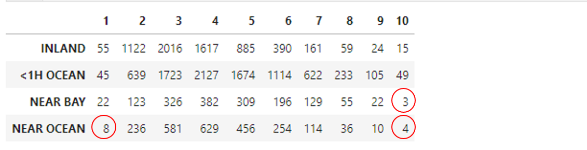
4.1. Visualization
- violin plot을 split 할 때 seaborn을 사용하면 편리하지만 numpy 버전이 14 이상일 경우 작동되지 않는 버그가 발생하기도 합니다.
- 다소 성가시지만 matplotlib을 이용해 수동으로 구현했습니다.
1
2
3
4
5
6
7
8
9
10
11
12
13
14
15
16
17
18
19
20
21
22
23
24
25
26
27
28
29
30
31
32
33
34
35
36
37
38
39
40
41
42import matplotlib.patches as mpatches
def violin(df1, df2, filename, title):
fig, ax = plt.subplots(figsize=(10, 5), sharey=True)
labels = []
def add_label(violin, label):
color = violin["bodies"][0].get_facecolor().flatten()
labels.append((mpatches.Patch(color=color), label))
parts1 = ax.violinplot([df1[col] for col in df1.columns], showextrema=False, positions=qlabels)
for i, pc in enumerate(parts1['bodies']):
m = np.mean(pc.get_paths()[0].vertices[:, 0])
pc.get_paths()[0].vertices[:, 0] = np.clip(pc.get_paths()[0].vertices[:, 0], -np.inf, m)
pc.set_facecolor('b')
pc.set_edgecolor('b')
ax.errorbar(x=np.array(qlabels)-0.1, y=df1.mean(axis=0), yerr = df1.std(axis=0),
fmt='o', mec='b', mew=2, mfc='w', ms=5, lw=2, c='b'
)
parts2 = ax.violinplot([df2[col] for col in df2.columns], showextrema=False, positions=qlabels)
for i, pc in enumerate(parts2['bodies']):
m = np.mean(pc.get_paths()[0].vertices[:, 0])
pc.get_paths()[0].vertices[:, 0] = np.clip(pc.get_paths()[0].vertices[:, 0], m, np.inf)
pc.set_facecolor('r')
pc.set_edgecolor('r')
ax.errorbar(x=np.array(qlabels)+0.1, y=df2.mean(axis=0), yerr = df2.std(axis=0),
fmt='o', mec='r', mew=2, mfc='w', ms=5, lw=2, c='r'
)
ax.set_xticks(qlabels)
ax.set_xlabel("bins")
ax.set_ylabel("RMSE")
ax.set_title(title, pad=10)
add_label(parts1, "random")
add_label(parts2, "stratify")
ax.legend(*zip(*labels), loc=9)
fig.tight_layout()
fig.savefig(filename)
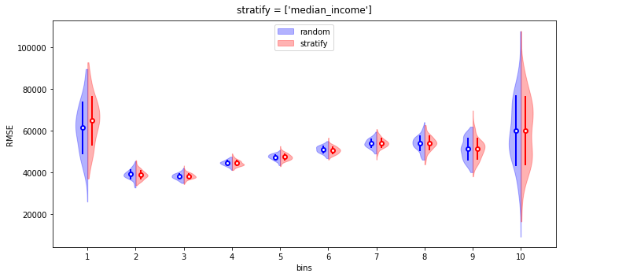
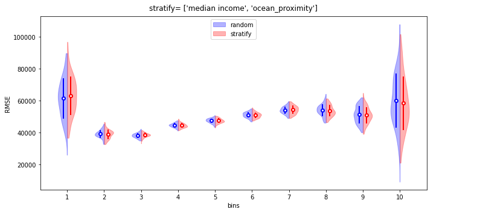
4.2. Test on Variances and Means
- 육안으로는 차이를 구분하기 힘듭니다만 임의추출과 층화추출간 평균과 분산이 같은지 확인해 보겠습니다.
- 분산 비교는
scipy.stats에 포함된 3가지의 등분산 검정-bartlett(),fligner(),levene()을, 평균 비교는 T 검정 중 독립표본 T 검정-ttest_inds()을 이용하겠습니다. - p-value가 0.05 미만일 경우 분산 또는 평균이 다르다고 가정하여, 0.05를 기준으로 DataFrame의 글자 색상을 다르게 넣어주도록 했습니다. 동일하면 빨간색, 다르면 파란색.
1
2
3
4
5
6
7
8
9
10
11
12
13
14
15
16
17
18
19
20
21
22
23
24
25
26
27
28
29
30
31
32
33
34
35import scipy.stats as stats
def color_test(val):
"""
Takes a scalar and returns a string with
the css property `'color: red'` for negative
strings, black otherwise.
"""
color = 'blue' if val < 0.05 else 'red'
return 'color: %s' % color
def vartest(df1, df2):
columns = df1.columns
df_var = pd.DataFrame(columns=columns)
bartlett = [stats.bartlett(df1[col], df2[col])[1] for col in columns]
fligner = [stats.fligner(df1[col], df2[col])[1] for col in columns]
levene = [stats.levene(df1[col], df2[col])[1] for col in columns]
df_var.loc['bartlett'] = bartlett
df_var.loc['fligner'] = fligner
df_var.loc['levene'] = levene
return df_var
def meantest(df1, df2, equal_var):
columns = df1.columns
df_mean = pd.DataFrame(columns=columns)
ttest = [stats.ttest_ind(df1[col], df2[col], equal_var=equal_var)[1] for col in columns]
df_mean.loc['ttest_ind'] = ttest
return df_mean
4.2.1. 1변수 층화추출
- 등분산 검정결과
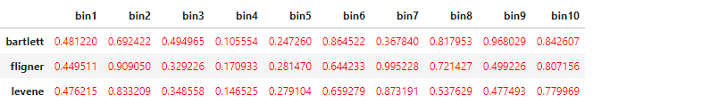
T 검정 결과
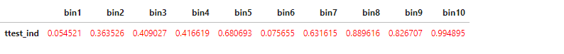
평균과 분산 모두 임의추출과 층화추출이 동일하다는 결론입니다.
4.2.2. 2변수 층화추출
- 등분산 검정결과
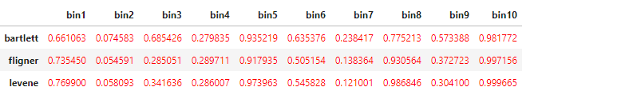
T 검정 결과
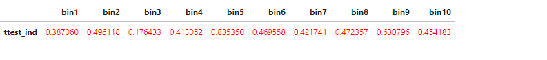
마찬가지로 추출 방식에 무관하다는 결론입니다.
5. Conclusion
- 결과적으로, 본 예제에서는 임의추출과 층화추출간 유의차를 발견하기 힘듭니다.
- 때로는 임의추출과 유의차가 없다는 것 또한 배움이겠죠. :)
- 비슷한 비교를 한 다른 분의 결과에서도 층화추출의 예측력이 증대되지는 않았다는 결과가 있으나, 재밌게도 여기서는 층화추출의 경우 훈련과 학습에 소요되는 시간이 줄어들었다고 합니다.
- 층화추출은 높은 점수보다는 결과에 대한 신뢰성을 위해 사용하는 방법입니다.
- 임의추출도 데이터 비율을 상당히 반영하기 때문에 신뢰성이 없다고 할 수 없지만 층화추출만큼 체계적이라 말하기 힘듭니다.
- 임의추출에서 층화추출과 유사한 결과를 얻었다 하더라도, 직접적으로 비교를 하지 않는 이상 개선의 여지가 있어 보이는 우연으로 느껴질 수 밖에요.
- 파이프라인에 익숙하지 않으신 분이라면 층화추출 과정이 번거롭다고 느껴질 수 있겠지만 임의추출이라고 계층화 정도가 생략될 뿐, 과정이 달라지지는 않습니다.
- 테스트세트를 가린 채 훈련 세트의 데이터 분포 기준으로 테스트 세트에도 동일한 기준의 전처리를 해야 하고, 그러자면 파이프라인만큼 효과적인 것이 없기에 파이프라인 구축은 습관을 들여야 합니다.